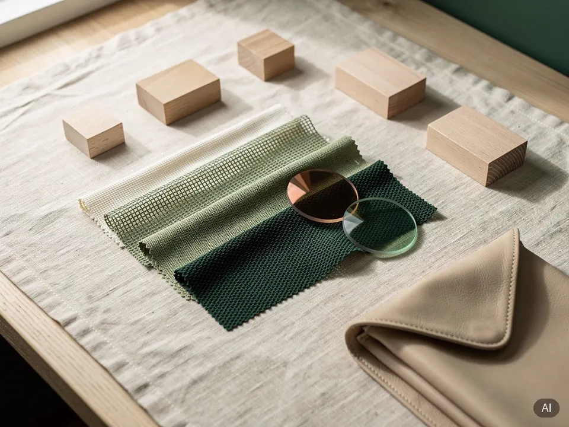
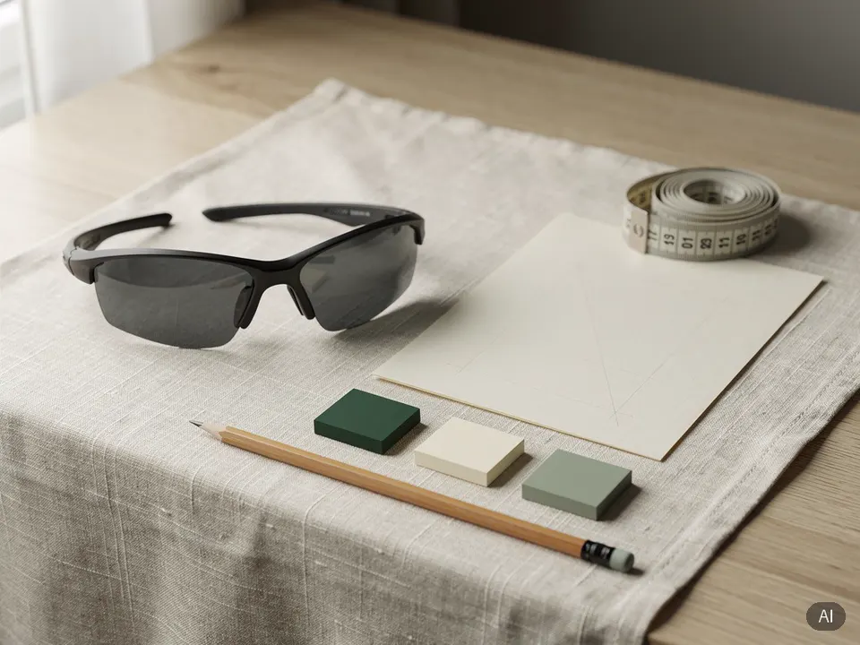
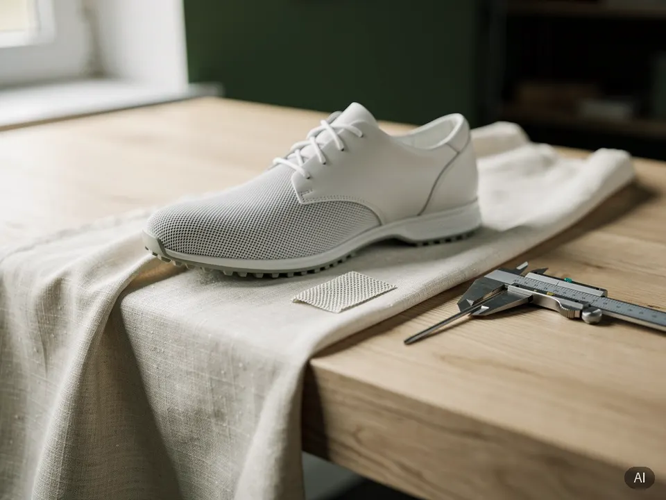
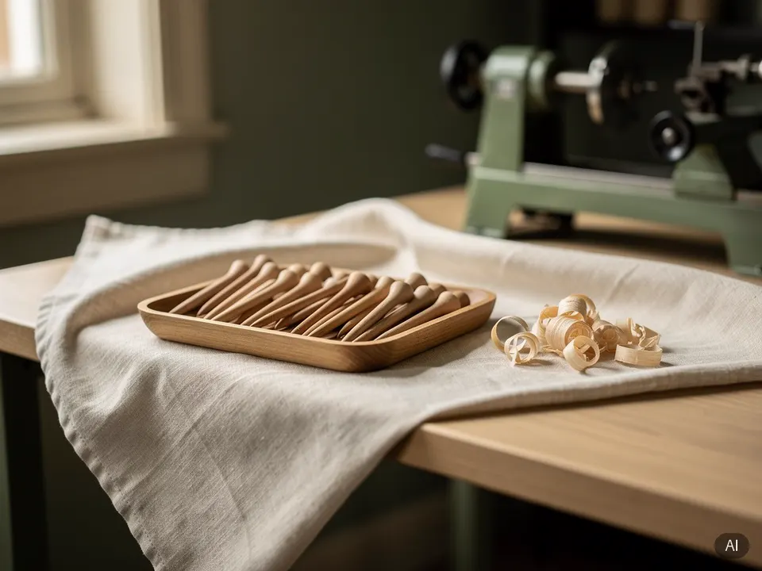
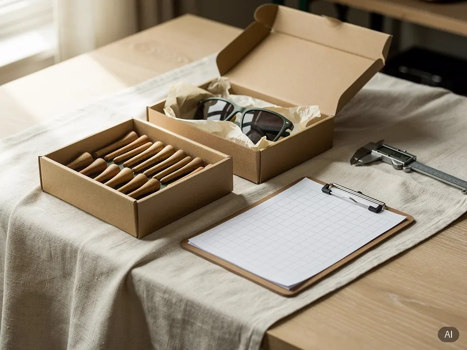
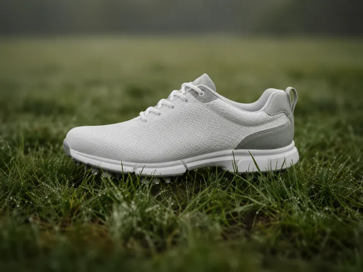

빠른 AI 가상견적이 가능한 대표 품목
첫 견적부터 출고까지
AI 가상견적부터 담당 에이전트의 사양 협의, 샘플 확인, 생산, 검수·출고까지 제작 전 과정을 함께 관리합니다.
-
견적 요청
AI 가상견적으로 시작하고, 상세 조건은 담당 에이전트와 협의합니다.
-
사양 협의
소재·색상·수량·일정과 제작 조건을 담당 에이전트와 조율합니다.
-
샘플 확인
1차 샘플부터 최종 컨펌까지 공장과 수정 사항을 조율합니다.
-
제품 생산
최종 샘플 컨펌 후 생산을 시작하고, 일정 변동은 사전에 안내합니다.
-
검수·출고
담당 에이전트가 완제품을 확인한 뒤 출고하고, 무역 업무를 지원합니다.

견적 요청
AI 가상견적은 시작 단계입니다. 견적이 제공되지 않는 제품도 요청 접수 후 담당 에이전트가 제작 조건과 가격을 확인해 안내합니다.
- 시작
- AI 가상견적 또는 기본 정보 접수
- 상세 협의
- 회원가입 후 상세견적 요청
- 담당 에이전트
- 제품·공장·운송 조건 확인

사양 협의
담당 에이전트와 화상미팅 또는 비대면 상담으로 제작 조건을 구체화하고, 비교 제품과 소재 대안도 함께 검토합니다.
- 협의 항목
- 소재·색상·수량·일정·마감·포장
- 비교 검토
- 비교 제품과 소재 대안 제안
- 진행 방식
- 비용·납기·제작 가능 여부 확인 후 사양 확정

샘플 확인
필요에 따라 1차 샘플 이후 2~3차 샘플을 진행하고, 최종 샘플을 기준으로 고객이 최종 컨펌합니다.
- 샘플 단계
- 1차 샘플 → 2·3차 샘플 → 최종 샘플
- 검토 항목
- 형태·치수·소재·색상·마감·착용감 또는 사용감
- 수정 진행
- 피드백을 제작 공장과 공유하고 수정 범위·일정 조율

제품 생산
최종 샘플과 제작 사양에 대한 고객의 최종 컨펌이 끝나면 생산을 시작합니다. 제조국과 공장 상황에 따른 일정 변동 가능성은 사전에 안내합니다.
- 생산 기준
- 최종 샘플·제작 사양·수량 최종 확정
- 일정 안내
- 생산·검수·출고 일정 사전 안내
- 일정 관리
- 제조국·시즌·공장 상황에 따른 변동 가능성 확인

검수·출고
생산이 끝나면 담당 에이전트가 제조 현장의 완제품을 대면 또는 비대면으로 확인한 뒤 출고합니다. 필요한 경우 무역 업무도 지원합니다.
- 품질 확인
- 수량·사양·외관·마감·포장 상태 확인
- 출고 관리
- 검수 결과 공유 후 제조공장 출고 진행
- 무역 업무
- 수출입 서류·운송·통관 절차 지원
공장이 정한 최소 수량보다, 현실적인 시작 수량으로 협의합니다.
제품과 공장 조건을 확인한 뒤 브랜드 상황에 맞는 생산 수량을 함께 조율합니다.
-

골프화
공장 기본1,200켤레
기본보다 700켤레 적게
협의 예시500켤레
-
골프티
1패키지는 50개입
공장 기본5,000패키지
기본보다 4,000패키지 적게
협의 예시1,000패키지
-
골프 선글라스
공장 기본2,000개
기본보다 1,200개 적게
협의 예시800개
협의 예시이며 확정 수량이 아닙니다. 제품, 소재, 사양, 공장 조건에 따라 달라지고 견적에서 확정됩니다.
함께한 고객사
- LOGO 01
- LOGO 02
- LOGO 03
- LOGO 04
- LOGO 05
- LOGO 06
고객 후기
-
후기가 준비되면 이곳에 표시돼요.
업종 · 직책
AI로 먼저, 담당자와 이어서
- AI 가상견적
- 선글라스·골프화·골프티는 로그인 없이 소재와 수량 등 기본 정보를 입력하면 예상 가격 범위를 바로 확인합니다. 확정 견적은 아닙니다. 범위를 안내하기 어려운 조건은 요청 접수 후 담당 에이전트가 확인합니다.
- 담당자 상세견적
- 회원가입 후 요청하면 담당자가 공장·운송 조건을 확인해 작성합니다. 업무일 기준 2~3일이 걸릴 수 있습니다. 작성되면 이메일로 알리며, 내 견적에서 확인할 수 있습니다.
- 질문과 상담
- 상세견적에 궁금한 점은 내 견적에서 300자까지 질문할 수 있습니다. 더 자세한 상담이 필요하면 심층상담을 요청할 수 있으며, 담당자가 전화로 연락합니다.
제품골프 선글라스
재질선택
수량입력
예상 가격 범위입력하면 이곳에 표시
| 항목 | 수량 | 단가 | 금액 |
|---|---|---|---|
| 담당자가 작성하면 이곳에 표시 | |||
| 합계 | 작성 후 표시 | ||
궁금한 점 입력, 300자 이내
질문 남기기심층상담 요청
예시 화면
견적은 제품 선택부터 시작합니다
골프 선글라스, 골프화, 골프티 중에서 고르세요.